第四章 基本平面图形（举一反三讲义）全章题型归纳
【北师大版2024】

【基础巩固】 2
【题型1 直线、射线、线段】 2
【题型2 两点确定一条直线】 3
【题型3 两点之间线段最短】 3
【题型4 两点之间的距离】 4
【题型5 比较线段的长短】 4
【题型6 作一条线段等于已知线段】 5
【题型7 线段的中点】 6
【题型8 线段的和差】 7
【题型9 角的概念】 8
【题型10 钟面角】 8
【题型11 度分秒的换算】 9
【题型12 方向角】 9
【题型13 角的大小比较】 10
【题型14 角的平分线】 11
【题型15 作一个角等于已知角】 12
【题型16 角的计算】 13
【题型17 多边形】 14
【题型18 圆的认识】 15
【能力提升】 16
【题型19 直线相交的交点个数问题】 16
【题型20 线段的应用】 16
【题型21 线段n等分点的有关计算】 17
【题型22 探究线段之间的数量关系】 18
【题型23 三角板中角度计算问题】 19
【题型24 几何图形中角度计算问题】 20
【题型25 角n等分线的有关计算】 21
【思维拓展】 22
【题型26 实际问题中角度计算问题】 22
【题型27 与线段有关的动点问题】 24
【题型28 旋转成动角的有关计算】 25

【基础巩固】
【题型1 直线、射线、线段】
【例1】（25-26七年级上·河北邯郸·期中）如图，已知四点A、B、C、D，请按下列要求作图（保留画图痕迹）

(1)画直线AB；
(2)画射线AD；
(3)连接BD，在线段BD上取点P，使PA+PC的值最小；
(4)数一数此时图中共有几条线段，几条射线？
【变式1-1】在日常生活中，手电筒发射出来的光线，类似于 ．（填“折线”或“线段”或“射线”或“直线”）
【变式1-2】如图，下列说法正确的是（ ）
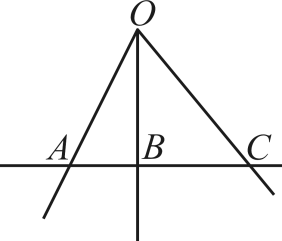
A．图中共有5条线段
B．直线AB与直线AC是指同一条直线
C．射线AB与射线BA是指同一条射线
D．点O在直线AC上
【变式1-3】（24-25七年级上·吉林长春·阶段练习）如图，有下列结论：

①以点A为端点的射线共有5条； ②以点D为端点的线段共有4条；
③射线CD和射线DC是同一条射线； ④直线BC和直线EF是同一条直线．
以上结论正确的是 ．（填序号）
【题型2 两点确定一条直线】
【例2】（25-26七年级上·河南郑州·期中）值日生小亮为了把桌子又快又好的摆整齐，总是先把一列的第一张桌子和最后一张桌子摆好，再依次摆中间的桌子，这样做蕴含的数学依据是 ．
【变式2-1】（24-25七年级上·陕西咸阳·阶段练习）值日生每天打扫完卫生后，总是先把每一列最前和最后的课桌摆好，然后再依次摆中间的课桌，很快就能把课桌摆得整整齐齐，他们这样做的道理是（ ）
A．两点确定一条直线 B．两点之间线段最短
C．直线没有端点 D．以上说法都不对
【变式2-2】在墙壁上固定一根横放的木条，至少需要钉子的枚数是（ ）
A．1 B．2 C．3 D．无法确定
【变式2-3】（24-25七年级上·山西吕梁·阶段练习）宣传委员制作黑板报时想要在黑板上画出一条笔直的参照线，由于尺子不够长，她想出了一个办法：在一根长度合适的毛线上涂满粉笔灰，两个同学分别抓住毛线两端，绷紧，靠近黑板要画线的位置，在中间将线一拉再松开，毛线弹回到黑板上，这样黑板上就出现了一条笔直的“粉笔灰线”，这种画法的数学依据是 ．
【题型3 两点之间线段最短】
【例3】（24-25七年级上·福建福州·期末）下列三个生活生产现象中，可依据“两点之间，线段最短”进行解释的现象有 （填序号）：
①用两个钉子，就可以把一根木条固定在墙上；
②植树时，只要定出两棵树的位置，就能确定同一行所在的直线；
③把弯曲的公路改直，能缩短路程．
【变式3-1】如图，为抄近路践踏草坪是一种不文明现象，请你用数学知识解释出现这一现象的原因是（ ）

A．两点确定一条直线 B．两点之间，线段最短
C．直线比线段短 D．对角线最短
【变式3-2】（24-25七年级上·辽宁铁岭·期末）如图，从A地到B地有a，b，c三条道路，人们通常会选择距离最短的道路b，这样做依据的数学原理是（ ）

A．点动成线 B．两点确定一条直线
C．两点之间，线段最短 D．线段中点的定义
【变式3-3】（25-26八年级上·全国·课后作业）如图，田亮同学用剪刀沿直线将一片平整的树叶剪掉一部分，发现剩下树叶的周长比原树叶的周长要小，能正确解释这一现象的数学知识是 ．

【题型4 两点之间的距离】
【例4】（25-26七年级上·河北唐山·期中）如图，A、B、C是一条公路上的三个村庄，A、B间的路程为60km，A、C间的路程为40km、现要在A、B之间建一个车站P，若要使车站到三个村庄的路程之和最小，则车站应建在 ．

【变式4-1】（24-25七年级上·甘肃白银·月考）如果线段AB=3cm，BC=4cm，则A、C两点间的距离是（ ）
A．7cm B．1cm C．7cm或1cm D．无法确定
【变式4-2】（24-25六年级上·上海普陀·期末）在线段AB的延长线上取一点C，使BC=13AB，如果BC=2cm，那么AC的长是（ ）
A．6cm B．8cm C．213cm D．223cm
【变式4-3】（25-26七年级上·河北石家庄·期中）有两根木条，一根AB长为80cm，另一根CD长为130cm，在它们的中点处各有一个小圆孔M、N（圆孔直径忽略不计，M、N抽象成两个点），将它们的一端重合，放置在同一条直线上，此时两根木条的小圆孔之间的距离MN是（ ）

A．105cm B．20cm C．105cm或25cm D．105cm或20cm
【题型5 比较线段的长短】
【例5】（24-25六年级上·上海·阶段练习）用叠合法比较线段AB和线段CD的大小，将线段AB移到线段CD的位置，使端点A与端点C重合，线段AB和线段CD叠合，则若点B ，则AB>CD．
【变式5-1】比较图中二人的身高，我们有 种方法．一种为直接用卷尺量出，另一种可以让两人站在一块平地上，再量出差．这两种方法都是把身高看成一条 ．
方法（1）是直接量出线段的 ，再作比较．
方法（2）是把两条线段的一端 ，再观察另一个 ．

【变式5-2】如图，AC>BD，比较线段AB与线段CD的大小（ ）
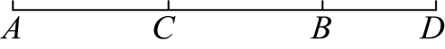
A．AB=CD B．AB>CD C．AB<CD D．无法比较
【变式5-3】（24-25七年级上·河北承德·期末）一个点在有公共端点的两条线段组成的一条折线上，且把这条折线分成长度相等的两部分，这个点叫作这条折线的“折中点”．如图所示，如果点D是折线A−C−B的“折中点”，请解答以下问题：

(1)当AC>BC时，点D在线段_____上；
(2)当点D与C重合时，直接比较AC，BC的大小．
(3)若E为线段AC的中点，EC=4，CD=3，求BC的长度．
【题型6 作一条线段等于已知线段】
【例6】（24-25七年级上·辽宁盘锦·期末）如图，已知线段a，b，利用尺规作图的方法作一条线段，使它等于2a−b．可以通过以下步骤完成作图：①在线段AB的延长线上截取线段BC=a；②在射线AM上截取线段AB=a；③画一条射线AM；④在线段AC上截取线段CD=b，
正确的作图排序是： ．所求作的线段是线段 ．
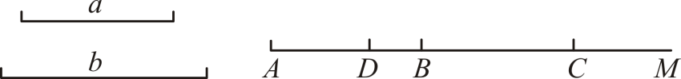
【变式6-1】（24-25七年级上·甘肃白银·阶段练习）已知线段a，b，用尺规作一条线段c，使得c=a+b；
【变式6-2】（24-25七年级上·吉林·期末）如图，点P在线段AB上．

(1)尺规作图：在线段AB上，截取BQ=AP．
(2)尺规作图：延长AB到点D，使BD=AP．
【变式6-3】（24-25七年级上·陕西西安·月考）如图，AB=12，点C、D分别是线段AB上两点（CD>AC，CD>BD），用圆规在线段CD上分别截取CE=AC，DF=BD，若点E与点F恰好重合，则CD的长度为 ．

【题型7 线段的中点】
【例7】（25-26七年级上·河北石家庄·期中）已知：如图，AB=12cm，点M是线段AB的中点，点C在线段MB上，且满足MC:CB=2:1．
(1)求线段MC的长；
(2)若点N为线段AB上一点，且MN=3cm，求线段NC的长．
【变式7-1】（25-26七年级上·全国·期末）如图，C是线段AB上一点，D，E分别是线段AC，BC的中点，若AB=16，AD:BE=3:1，则BE的长为（ ）
A．4 B．3 C．2 D．32
【变式7-2】如图，线段AB=20，点C在线段AB上，点D是AC的中点，E是AB中点，DE=6，则线段AC的长为 ．
【变式7-3】（25-26七年级上·全国·期末）如图，有一根木棒CD放置在数轴上，它的两端C，D分别落在点A，B上，将木棒在数轴上水平移动，当CD的中点移动到点B时，点D 所对应的数为−2，当CD的四等分点（不含中点）移动到点A 时，点 C 所对应的数为−9，则木棒CD的长度为 ．

【题型8 线段的和差】
【例8】（25-26七年级上·河北衡水·期中）如图，已知B，C两点把线段AD从左至右依次分成2：4：3三部分，M是AD的中点，BM=5cm，求线段MC的长．

【变式8-1】（24-25七年级上·全国·期末）将线段AB延长到C，使BC=12AB，延长BC到D，使CD=12BC，延长CD到E，使DE=12CD，若AE=45cm，则AB= ．
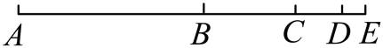
【变式8-2】（24-25七年级上·湖北武汉·月考）如图，点B在线段AC上，且BC=2AB，D,E分别是AB，BC的中点．则下列结论：①AB=13AC；②B是AE的中点；③EC=2BD；④DE=32AB；⑤若DE=5，则图中所有线段之和为50．其中正确的结论有（ ）

A．2个 B．3个 C．4个 D．5个
【变式8-3】（24-25七年级上·河北石家庄·期中）【新知理解】
点C在线段AB上，若BC=2AC或AC=2BC，则称点C是线段AB的“优点”，线段AC，BC称作互为“优点”伴侣线段．
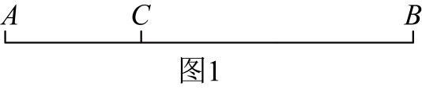
例如，图1，线段AB的长度为6，点C在AB上，AC的长度为2，则点C是线段AB的其中一个“优点”．
（1）若点C为图1中线段AB的“优点”，且AC=3AC<BC，则AB=__________；
（2）若点D也是图1中线段AB的“优点”（不同于点C），则AC_______BD（填“>”“ <”或“=”）
【解决问题】

如图2，数轴上有E，F两点，其中E点表示的数为1，F点表示的数为4；
（3）若M点在N点的左侧，且M，N均为线段OF的“优点”，则线段MN的长为____________；
（4）若点G在线段EF的延长线上，且线段EF与GF互为“优点”伴侣线段，则点G表示的数为___________．
【题型9 角的概念】
【例9】下列关于角的说法正确的个数是（ ）
①角是由两条射线组成的图形；②角的边越长，角越大； ③在角一边延长线上取一点D；④角可以看作由一条射线绕着它的端点旋转而形成的图形．
A．1个 B．2个 C．3个 D．4个
【变式9-1】把一个20°的角放在10倍的放大镜下看，这个角是 度．
【变式9-2】（1）图中可以用一个大写字母表示的角有 ；
（2）以A为顶点的角有 ；
（3）图中一共 个角（不包括平角）．

【变式9-3】在锐角∠AOB内部，画出1条射线，可以画出3个锐角；画出2条不同的射线，可以画出6个锐角；画出3条不同的射线，可以画出10个锐角……照此规律，画2020条不同的射线，可以画出 个锐角．
【题型10 钟面角】
【例10】（24-25七年级上·吉林·期末）上午8:30时，钟表的时针和分针所成锐角的度数是（ ）
A．60° B．45° C．75° D．90°
【变式10-1】（24-25七年级上·甘肃武威·期末）从下午13:00到当天下午13:50，时钟的分针转过的角度为 度．
【变式10-2】当一个挂钟走到4时12分的时候，时针与分针所成的较小的夹角是 度．
【变式10-3】如图，在一个圆形时钟的表面上，OA表示时针，OB表示分针 (O为两针的交点即旋转中心)． 下午3点时，OA与OB成直角．

(1)时针1小时转过的角度为 °，分针 1分钟转过的角度为 °；
(2)在下午3点至4点之间，从下午3点开始，经过多少分钟，时针与分针成60°角？
【题型11 度分秒的换算】
【例11】（24-25七年级上·河北邯郸·期中）计算：
(1)131°28′−32′15″；
(2)58°38′27″+47°42′40″．
【变式11-1】（24-25七年级上·广东东莞·期末）用度、分、秒表示91.34°为（ ）
A．91°20′24″ B．91°34′ C．91°20′4″ D．91°3′4″
【变式11-2】（25-26七年级上·河南濮阳·期中）若∠1=33°33',∠2=33.33°,∠3=33.55°，则下列结论正确的是（ ）
A．∠1=∠2 B．∠2=∠3 C．∠1<∠3 D．∠1=∠3
【变式11-3】如图，某种齿轮每相邻两齿中心线间的夹角都相等，如果是一个15个齿的齿轮，则这个夹角的度数是24°；如果是一个22个齿的齿轮，则这个夹角的度数约为 ．（精确到分）
【题型12 方向角】
【例12】（24-25六年级上·上海·阶段练习）北偏西20∘和南偏东80∘所成的角是 ．
【变式12-1】（25-26六年级上·黑龙江哈尔滨·阶段练习）如图中所示，只用方向和角度描述，学校在广场的 ．

【变式12-2】（25-26六年级上·黑龙江哈尔滨·期中）小明面向北偏东40°方向站好，当他向左转90°时，他面向（ ）方向．
A．南偏东50° B．南偏东50° C．北偏西40° D．北偏西50°
【变式12-3】（25-26六年级上·黑龙江绥化·阶段练习）一架飞机从某机场向北偏东50°方向飞行了1200千米，原路返回时要向（ ）方向飞行1200千米．
A．南偏西40° B．西偏南40° C．东偏北40° D．北偏东40°
【题型13 角的大小比较】
【例13】对于如图所示的各个角，用“>”、“<”、“=”填空：
(1)∠AOB___________∠AOC；
(2)∠DOB___________∠BOC；
(3)∠BOC___________∠AOD；
(4)∠AOD___________∠BOD．
【变式13-1】（25-26七年级上·河北唐山·期中）如图，利用带60°角的三角板比较∠A和∠B的大小，下列结论正确的是（ ）
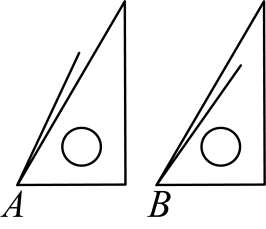
A．∠A>∠B B．∠A=∠B C．∠A<∠B D．无法判断
【变式13-2】根据图形，写出OC与∠AOB的位置关系，并用数学符号写出∠AOB与∠COB的大小关系．

【变式13-3】如图所示表示两块三角板．
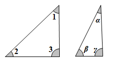
（1）用叠合法比较∠1，∠α，∠2的大小；
（2）量出图中各角的度数，并把图中的6个角从小到大排列，然后用“＜”或“＝”连接．
【题型14 角的平分线】
【例14】（25-26七年级上·河北唐山·期中）如图，已知∠AOC：∠BOC＝1∶3，OD平分∠AOB，且∠COD=36°，求∠AOB的值．
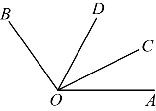
【变式14-1】（25-26七年级上·河北唐山·期中）如图，∠AOB=75∘，∠BOC=15∘，OD是∠AOC的平分线，则∠COD的度数为 °

【变式14-2】（25-26七年级上·全国·课后作业）如图，∠AOD=120°，OC平分∠AOD，OB平分∠AOC，下列结论：①∠AOC=∠COD；②∠COD=2∠BOC；③∠AOB与∠COD可以拼成一个直角；④∠AOC与∠AOD可以拼成一个平角，正确的个数有（ ）

A．1个 B．2个 C．3个 D．4个
【变式14-3】（25-26七年级上·全国·单元测试）已知∠AOB=84°，OM，ON分别是∠BOC和∠AOC的平分线．

(1)当射线OC在∠AOB内部时，求∠MON的度数；∠MON的值随着OC在∠AOB内转动是否变化，为什么？
(2)当OC在∠AOB外部时，∠MON的值是否会随着OC的转变而变化？简单说明理由．
【题型15 作一个角等于已知角】
【例15】（25-26七年级上·辽宁沈阳·期中）如图，∠BAC=80°，∠CAD=20°，以A为圆心，任意长为半径画弧，分别交射线AB、AD、AC于E、F、G，以G为圆心，以EF为半径画弧，交前弧于点H，过H作射线AM，则∠BAM=

【变式15-1】（25-26八年级上·内蒙古呼和浩特·阶段练习）如图，已知∠ABC，请用尺规作图在下方作出∠A′B′C′，使得∠ABC=A′B′C′（在图上保留作图痕迹）．
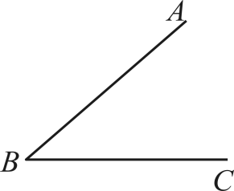
【变式15-2】（24-25七年级上·内蒙古巴彦淖尔·期末）如图，已知∠1，∠2∠1>∠2，求作∠ABC，使∠ABC=∠1−∠2（用尺规作图，不写作法，保留作图痕迹）．

【变式15-3】（24-25七年级上·河北邯郸·期末）如图，由∠AOB尺规作∠AOC．若∠AOC=48°36′，OD平分∠BOC，则∠BOD= 度．
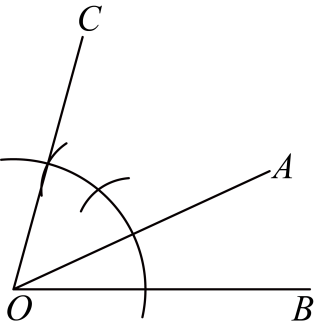
【题型16 角的计算】
【例16】（25-26七年级上·河北石家庄·期中）如图，在∠AOC中，∠AOB是直角，∠BOC=70∘，射线OE平分∠AOC，射线OF平分∠BOC，则∠EOF的度数为 ．

【变式16-1】如图，∠AOC与∠BOC的度数比为4:2，OD平分∠AOB，若∠COD=10°，则∠AOB的度数是 ．

【变式16-2】如图，已知∠AOC=∠COD=∠DOE=∠EOB=α，若以OA，OB，OC，OD，OE为边的各角之和等于380°，则∠AOB= ．

【变式16-3】（25-26七年级上·全国·课后作业）综合与探究
问题情境
数学课上，老师和同学们以具有公共顶点的两个直角为背景，探究有关角的问题．如图1，∠AOB=∠COD=90°，射线OC在∠AOB的内部，射线OB在∠COD的内部．
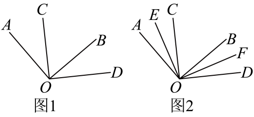
特例分析
（1）若∠BOC=50°，则∠AOD的度数为 ．
规律探究
（2）若∠BOC=α，求∠AOD的度数．
拓展延伸
（3）在图1的基础上，作射线OE平分∠AOC，OF平分∠BOD，得到图2．
①若∠BOC=40°，则∠EOF的度数为 ．
②若∠BOC=β，求∠EOF的度数．
【题型17 多边形】
【例17】（24-25七年级下·四川巴中·期末）如果过某多边形的一个顶点的对角线有9条，则该多边形对角线一共有 条．
【变式17-1】下列图形中，属于多边形的是（ ）
A． B．
B．
C． D．
D．
【变式17-2】一个四边形切掉一个角后变成（ ）
A．四边形 B．五边形
C．四边形或五边形 D．三角形或四边形或五边形
【变式17-3】如图，从一个多边形的某个顶点出发，分别连接这个顶点与其余各顶点，可以把这个多边形分割成若干个三角形．

（1）根据以上多边形的边数与分割成三角形的个数之间的规律，猜测n(n≥4)边形可以分割三角形的个数是 ；
（2）若已知一个多边形，按以上方法可分割成120个小三角形，则多边形的边数n= ．
【题型18 圆的认识】
【例18】下列说法正确的是（ ）
A．圆上任意两点间的部分叫作圆弧
B．圆上任意两点间的线段叫作弧
C．圆上任意两点间的线段长度叫作弧
D．任意两点间的部分叫作弧
【变式18-1】（24-25九年级上·甘肃张掖·期末）如图所示，点P是⊙O上的任意一点，则以点P为端点的半径（ ）
A．有1条 B．有2条 C．有无数条 D．不存在
【变式18-2】（25-26九年级上·河南平顶山·期中）下列说法中，错误的是（ ）
A．经过点P的圆有无数个 B．以点P为圆心的圆有无数个
C．半径为3cm且经过点P的圆有无数个 D．以点P为圆心，3cm长为半径的圆有无数个
【变式18-3】（24-25九年级上·辽宁大连·月考）如图，在半径为50mm的⊙O中，弦AB长50mm．∠AOB的度数 ．

【能力提升】
【题型19 直线相交的交点个数问题】
【例19】若四条不重合的直线在平面内交点的个数为a，则a的最大取值为（ ）
A．3 B．4 C．5 D．6
【变式19-1】若平面内互不重合的4条直线只有3个交点，则平面被分成了 个部分．
【变式19-2】（24-25七年级上·河南郑州·期末）用归纳策略解答问题：
如图，四条直线l1，l2，l3，l4，我们发现每两条直线都有一个交点，且交点不重合，我们称这种相交方式为“两两相交”．

问题：如果有101条直线“两两相交”，它们有多少个交点？请写出你的思考过程．
【变式19-3】平面上有7条不同的直线，如果其中任何三条直线都不共点．
(1)请画出满足上述条件的一个图形，并数出图形中各直线之间的交点个数；
(2)请再画出各直线之间的交点个数不同的图形（至少两个）；
(3)你能否画出各直线之间的交点个数为n的图形，其中n分别为6，21，15？
(4)请尽可能多地画出各直线之间的交点个数不同的图形，从中你能发现什么规律？
【题型20 线段的应用】
【例20】观察图形，并回答下列问题：
(1)图中共有几条线段？说明你分析这个问题的具体思路；
(2)请你用上面的思路来解决“十五个同学聚会每个人都与其他人握一次手，共握了多少次”这个问题；
(3)十五个同学聚会，每个人都送给其他人一张名片呢，共送了几张？
【变式20-1】如图，有一种电子游戏，电子屏幕上有一条直线，在直线上有A，B，C，D四点．点P沿直线l从右向左移动，当出现点P与A，B，C，D四点中的至少两个点距离相等时，就会发出警报，则直线l上会发出警报的点P最多有 个．

【变式20-2】往返于成都、重庆两地的高铁列车，若中途停靠简阳、内江和永川站，则有（ ）种不同票价，要准备（ ）种车票．
A．7、14 B．8、16 C．9、18 D．10、20
【变式20-3】如图，点B，C，D在线段AE上．

（1）图中共有几条线段？说说你分析这个问题的具体思路．
（2）你能用上面的思路来解决“8位同学参加班上组织的象棋比赛，比赛采用单循环制（即每两位同学之间都要进行一场比赛），那么一共要进行多少场比赛”这个问题吗？
【题型21 线段n等分点的有关计算】
【例21】如图，已知点C，D是线段AB上两点，AC:CD:DB=3:4:5，E是线段CD的中点，点F是线段DB的三等分点DF=13DB．
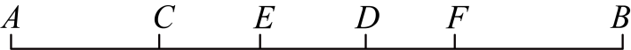
(1)若AB=60cm，求AE的长；
(2)若EF=11cm，求AB的长．
【变式21-1】（24-25七年级上·浙江温州·期末）都江堰李冰石人的肩部和脚部通常被用作测量水位．洪水水位C与枯水水位D分别位于整尊石人AB的六等分点处，AC=BDAC<CD，已知CD=2.2 m，则整尊石人AB的高度= m．

【变式21-2】如图，点C是线段AB的中点，点N是线段AC的三等分点．若线段AB的长为12，则线段BN的长度是（ ）

A．10 B．8 C．7或9 D．8或10
【变式21-3】如图，C，D，E是线段AB的四等分点，下列等式不正确的是（ ）
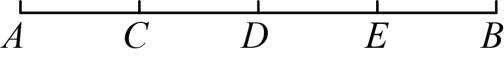
A．AB＝4AC B．CE＝12AB C．AE＝34AB D．AD＝12CB
【题型22 探究线段之间的数量关系】
【例22】（24-25七年级上·江苏扬州·期末）如图，已知点A、B在电线OP上，OA=25OP，BP=710OP．若将电线在点A处折叠，使点O、B分别落在点O′、B′处，则用老虎钳在点B′处剪断后，电线OP剪成的三段中，最短的电线与最长的电线长度比是（ ）

A．1:2 B．1:3 C．2:3 D．2:5
【变式22-1】（24-25七年级下·湖南株洲·开学考试）如图1，AB是一条拉直的细绳，C和D两点在AB上，且AC:BC=2:3,AD:BD=3:7．若将点C固定，将AC折向BC，使得AC重叠在BC上（如图2），再沿点D剪断，使细绳分成三条，则分成的三条细绳的长度由小到大之比为（ ）

A．1:2:3 B．1:1:3 C．1:1:2 D．2:3:5
【变式22-2】如图，线段AB的长为a，点C为线段AB的中点，D为线段AB上一点，且AD=13BD．图中共有 条线段；若P为直线AB上一点，且PA+PB=1110a，则PDAB的值为 ．

【变式22-3】（24-25七年级上·湖北武汉·期末）已知点A，B，C，D，E在同一直线上．

(1)C是线段AB的中点，D是线段AC上的点，AB=30，
①如图（1），若CD=14BD，求线段CD的长；
②如图（2），E是线段AB上的点，D是线段AE的中点．若AD=2BE，求线段CE的长；
(2)C是线段AB上一点，D是线段AE的中点．若AC=2BC=8CD，直接写出BE与AB的数量关系．
【题型23 三角板中角度计算问题】
【例23】（24-25九年级上·江苏无锡·月考）将两块直角三角尺的直角顶点重合为如图所示的形状，若∠AOD=127°，则∠BOC=（ ）

A．37° B．47° C．53° D．43°
【变式23-1】一副三角板，如图所示叠放在一起，则图中∠α的度数是（ ）

A．75° B．60° C．65° D．55°
【变式23-2】（25-26八年级上·广东江门·月考）将一副三角尺按如图所示的方式摆放，则∠α的大小为 ．
【变式23-3】（24-25六年级下·山东泰安·期末）利用三角板特殊角的度数，可以解决很多问题，现将一副三角尺叠放在一起．
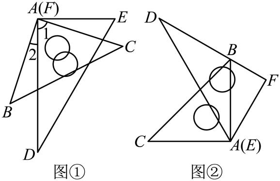
(1)如图①，若∠1=4∠2，求∠BAE的度数；
(2)如图②，若∠CAD=2∠BAF，求∠BAD的度数．
【题型24 几何图形中角度计算问题】
【例24】（2025七年级上·全国·专题练习）如图1，点O为直线AB上一点，过点O作射线OC，使∠AOC:∠BOC=2:1，将直角三角板的直角顶点放在点O处，一边ON在射线OA上，另一边OM在直线AB的下方．

(1)在图1中，∠AOC=______，∠BOC=______．
(2)将图1中的三角板按图2的位置放置，使得OM在射线OA上，则∠CON=______；
(3)将上述直角三角板按图3的位置放置，使得OM在∠BOC的内部，求∠BON−∠COM的度数．
【变式24-1】已知∠AOB是直角，在∠AOB的内部有一条射线OC，满足∠AOC=12∠COB，在∠AOB所在平面上另有一条射线OD，满足∠BOD=13∠AOC，则∠COD的度数为 ．
【变式24-2】（24-25七年级上·甘肃兰州·期末）如图，射线OC在∠AOB的内部，图中共有3个角：∠AOB，∠AOC和∠BOC，若其中一个角的度数是另一个角度数的两倍，则称射线OC是∠AOB的“平衡线”.若∠AOB=72°，且射线OC是∠AOB的“平衡线”，则∠AOC的度数为（ ）

A．24° B．24°或36° C．36°或48° D．24°或36°或48°
【变式24-3】定义：若两个角的度数差的绝对值等于60°，则称这两个角互为“优角”，其中一个角是另一个角的“优角”．如∠α=100°，∠β=40°，∠α−∠β=60°，则∠α和∠β互为“优角”．如图，∠AOB=120°，射线OC平分∠AOB，∠EOF在∠AOB的内部．若∠EOF=60°，则图中互为“优角”的共有（ ）

A．6对 B．7对 C．8对 D．9对
【题型25 角n等分线的有关计算】
【例25】已知OC是∠AOB的平分线，∠BOD=13∠COD，OE平分∠COD，设∠AOB=α，则∠BOE=（ ）
A．516α或18α B．516α或16α C．18α或16α D．16α
【变式25-1】如图，设锐角∠AOB的度数为α，若一条射线平分∠AOB，则图中所有锐角的和为2α．若四条射线五等分∠AOB，则图中所有锐角的和为( )

A．7α B．6α C．5α D．4a
【变式25-2】定义：从∠AOB的顶点出发，在角的内部引一条射线OC，把∠AOB分成1:2的两部分，射线OC叫做∠AOB的三等分线．若在∠MON中，射线OP是∠MON的三等分线，射线OQ是∠MOP的三等分线，设∠MOQ=x，则∠MON用含x的代数式表示为（ ）
A．94x或3x或92x B．94x或3x或9x C．94x或92x或9x D．3x或92x或9x
【变式25-3】如图①，射线OC在∠AOB内部，图中共有三个角∠AOC、∠AOB、 ∠BOC，若其中有两个角的度数之比为1:2，则称射线OC为∠AOB的“幸运线”．如图②，若∠MON=120°，射线OP为∠MON的“幸运线”，则∠MOP的度数是 ．

【思维拓展】
【题型26 实际问题中角度计算问题】
【例26】（24-25九年级下·河南信阳·月考）如图，阳光与水平面成30°角，若要用平面镜使阳光竖直射入井中（物理学中，反射角=入射角），则阳光与平面镜的夹角（∠1）为 °

【变式26-1】（24-25八年级下·广东深圳·期中）如图1，汉代的《淮南万毕术》中记载的“取大镜高悬，置水盆于其下，则见四邻矣”，是古人利用光的反射定律改变光路的方法．为了探清一口深井的底部情况，如图2，在井口放置一面平面镜可改变光路，当太阳光线AB与地面CD所成夹角∠ABC=48°时，已知∠ABE=∠FBM，要使太阳光线经反射后刚好垂直于地面射入深井底部，此时平面镜EF与地面的夹角∠EBC= ．

【变式26-2】如图，把∠APB放置在量角器上，P与量角器的中心重合，读得射线PA、PB分别经过刻度117和153，把∠APB绕点P逆时针方向旋转到∠A′PB′，下列结论：
①∠APA′=∠BPB′；
②若射线PA′经过刻度27，则∠B′PA与∠A′PB互补；
③若∠APB′=12∠APA′，则射线PA′经过刻度45．
其中正确的是（ ）
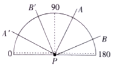
A．①② B．①③ C．②③ D．①②③
【变式26-3】如图1，大课间的广播操展让我们充分体会到了一种整体的图形之美，欢欢和乐乐想从数学角度分析下如何能让班级同学们的广播操做得更好，他们搜集了标准广播操图片进行讨论，如图2，为了方便研究，定义两手手心位置分别为A，B两点，两脚脚跟位置分别为C，D两点，定义A，B，C，D平面内O为定点，将手脚运动看作绕点O进行旋转：

(1)填空：如图2，A，O，B三点共线，且∠AOC=∠BOC，则∠AOC=______°
(2)第三节腿部运动中，如图3，欢欢发现，虽然A，O，B三点共线，却不在水平方向上，且∠AOD:∠BOC=6:5．她经过计算发现，∠AOC−20°∠BOD+12°的值为定值，请判断欢欢的发现是否正确，如果正确请求出这个定值，如果不正确，请说明理由；
(3)第四节体侧运动中，乐乐发现，两腿左右等距张开且∠COD=30°，开始运动前A、O、B三点在同一水平线上，OA、OB绕点O顺时针旋转，OA旋转速度为50°/s，OB旋转速度为25°/s，当OB旋转到与OD重合时，运动停止，如图4
①运动停止时，直接写出∠AOD=______；
②请帮助乐乐求解运动过程中∠AOC与∠BOE的数量关系．
【题型27 与线段有关的动点问题】
【例27】（24-25七年级上·浙江绍兴·期末）如图，已知数轴上A,B两点对应的数分别为−13和−5，B,C两点对应的数互为相反数．
(1)求AC的长；
(2)若点P从点A出发，以每秒1个单位长度的速度向终点C运动．同时点Q从点C出发，以每秒2个单位长度的速度向点A运动，当点Q到达点A后立即返回，仍然以每秒2个单位长度的速度运动至点C停止，设运动时间为t（秒）．
①问t为何值时，B为PQ的中点？
②当PQ=13AC时，求t的值．
【变式27-1】（24-25七年级上·四川成都·期末）如图，数轴上点A、B两点相距100个单位长度，点B在点A的右边，点A表示的数是−30．动点P从点A出发，以每秒6个单位长度的速度沿数轴正方向运动，动点Q同时从点B出发，以每秒4个单位长度的速度也沿数轴正方向运动，设运动时间为t秒．
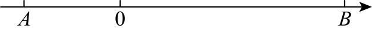
(1)点B表示的数是多少？
(2)当点P、点Q相距20个单位长度时，求t的值；
(3)设M为线段PA的中点，N为线段QB的中点，用t的代数式表示线段MN的长度，并求当点M与点N重合时t的值．
【变式27-2】（24-25七年级上·辽宁盘锦·期末）点C是直线AB上一动点，当CA=2CB时，我们称点C是点A与点B的衍生点，记作C(A&B)，

【定义理解】
问题（1）若点C在线段AB上时，A表示−3，B表示6时，则C(A&B)表示的数是 ．
【深入研究】
当点C是点A与点B的衍生点时，分别取线段AC，BC的中点M，N，发现线段CM、CN、AB之间存在着一种特殊的数量关系，小明同学觉得若想探寻此问题，需要分两种情况讨论：①点C在线段AB上时；②点C在线段AB的延长线上时．
问题（2）请任意选择①，②中的一种情况，画出图形，猜想线段CM,CN,AB之间满足的数量关系，并说明理由；
【拓展提升】
问题（3）若点C在线段AB上，线段AB=20cm,BC=8cm，动点P、Q分别从A、B两端同时出发，点P以2cm/s的速度沿AB向右运动，终点为B，点Q以3cm/s的速度沿BA向左运动，到达A点后立即返回，终点是B．当一个点到达终点，另一个点也随之停止运动，请求出运动多少秒时，点C是点P与点Q的衍生点．
【变式27-3】（24-25七年级上·江西九江·阶段练习）如图，点C,D,E都在直线AB上，C是线段AB的中点，E是线段CB的中点，CE=4．

(1)当点D在线段AC上且AD:DC=1:3时，求DC和AB的长．
(2)若P是直线AB上的动点，动点P从点A出发，以3个单位长度/秒的速度沿着AB的方向运动，运动时间为t秒．
①已知另一动点Q从点E出发，以2个单位长度/秒的速度沿着EA的方向同时运动．是否存在PB=QB？若存在，求出此时运动的时间t；若不存在，请说明理由．
②当动点P在线段AC上运动时，M,N分别是线段AC和BP的中点，试判断AB−CP与线段MN之间的数量关系，并说明理由．
【题型28 旋转成动角的有关计算】
【例28】（24-25七年级上·四川成都·期末）已知∠AOB=90°．
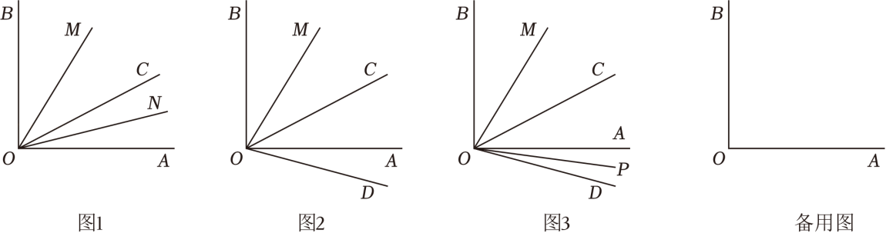
(1)如图1，若射线ON，OM分别为∠AOC，∠BOC的角平分线，则∠MON= ．
(2)如图2，射线OC从OA出发绕点O以每秒20°的速度沿逆时针方向旋转，射线OD从OA出发绕点O以每秒10°的速度沿顺时针方向旋转，设运动时间为t，且OM平分∠BOC．
①当0<t<4.5时，若ON分∠AOC为1:3两个部分，求满足∠DON=12∠MON时，t的值．
②如图3，若OP平分∠AOD，当0<t<6且t≠4.5时，试判断2∠MOP−∠COD是否为定值．若是，请求出该定值；若不是，请说明理由．
【变式28-1】（24-25七年级上·江苏淮安·期末）如图1，点O是直线AB上一点，射线OC从OA开始以每秒3°的速度绕点O顺时针转动，射线OD从OB开始以每秒5°的速度绕点O逆时针转动，当OC、OD相遇时，停止运动；将∠AOC、∠BOD分别沿OC、OD翻折，得到∠COE、∠DOF，设运动的时间为t（单位：秒）．

(1)如图2，当OE、OF重合时，∠COD= °；
(2)当t=10时，∠EOF= °，当t=12时，∠EOF= °；
(3)如图3，射线OP在直线AB的上方，且∠AOP=70°，在运动过程中，当射线OE、OP、OF其中一条射线是另外两条射线组成角的平分线时，求出t的值．
【变式28-2】已知，OC是∠AOB内部的一条射线，且∠AOB=3∠AOC．

(1)如图1所示，若∠AOB=120°，OM平分∠AOC，ON平分∠AOB，求∠MON的度数；
(2)如图2所示，∠AOB是直角，从点O出发在∠BOC内引射线OD，满足∠BOC−∠AOC=∠COD，若OM平分∠COD，求∠BOM的度数；
(3)如图3所示，∠AOB=x°，射线OP，射线OQ分别从OC，OB出发，并分别以每秒1°和每秒2°的速度绕着点O逆时针旋转，OP和OQ分别只在∠AOC和∠BOC内部旋转，运动时间为t秒．
①直接写出∠AOP和∠COQ的数量关系；
②若∠AOB=150°，当∠POQ=23∠BOP，求t的值．
【变式28-3】（24-25七年级上·广西百色·期末）【阅读理解】射线OC是∠AOB内部的一条射线，若∠COA=12∠BOC，则称射线OC是射线OA关于∠AOB的伴随线．例如，如图1，若∠AOC=12∠BOC，则称射线OC是射线OA关于∠AOB的伴随线；若∠BOD=12∠COD，则称射线OD是射线OB关于∠BOC的伴随线．
【知识运用】如图2，∠AOB=150°．
(1)若射线OM是射线OA关于∠AOB的伴随线，则∠AOM= °；
(2)若射线ON是射线OB关于∠AOB的伴随线，射线OQ是∠AOB的角平分线，则∠NOQ的度数是 °；
(3)射线OC与射线OA重合，并绕点O以每秒2°的速度逆时针旋转，射线OD与射线OB重合，并绕点O以每秒3°的速度顺时针旋转，当射线OD与射线OA重合时，运动停止．
①是否存在某个时刻t（秒），使得∠COD的度数是20°？若存在，请求出t的值，若不存在，请说明理由；
②当t为多少秒时，射线OC, OD, OA中恰好有一条射线是其余两条射线组成的角的一边的伴随线．